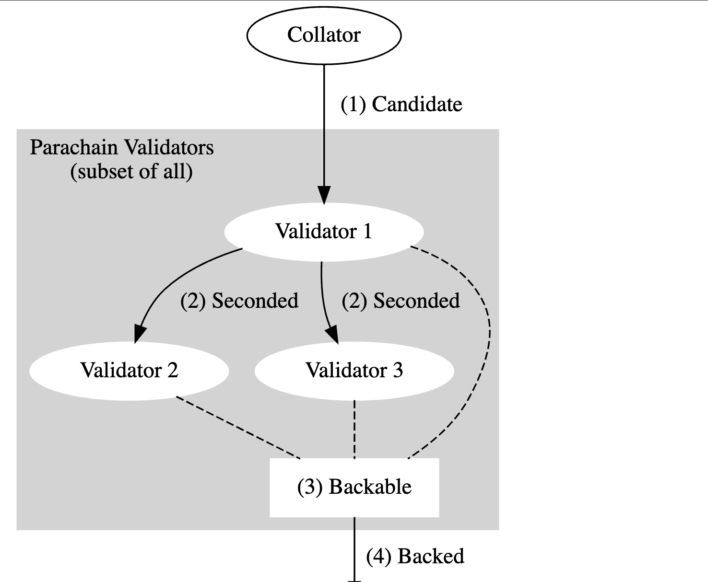

ClusterTracker¶
Background¶
In the early stage of parablock life cycle, collator forwards the parablock(candidate) and its PoV to the validator set assigned to the same parachain after it produces a parablock. Validator set then participate the Candidate Backing Subsystem to validate. If candidate gets enough signed validation statements, it is considered as backable.
During the Candidate backing, each validator in the validator set needs to ensure the received candidate is valid and generates the appropriate validation statement. If one candidate is considered valid, the signed validation statement of it will be forwarded to other validators by the statement distribution subsystem(this is called Seconded).
Statement distribution subsystem is responsible for distributing the signed statements that validators have generated and forwarding statements generated by the peers. Only the candidate with validation statements reaching to the backing-group quorum will be considered as Backable.
Here, it is important to notice that every well-connected node is aware of every next potential parachain block, including validators within the current parachain validator set(in-group) and validators assigned to other parachains at this moment(out-group). For statement distribution, in-group validators need to consider all seconded candidates. This is call Cluster mode; Out-group validators only need to consider Backable candidate from other groups. This is called Grid mode.

Cluster Mode¶
Validator nodes are partitioned into groups, and validators within a group at a relay-parent can send each other statement messages for any candidates within that group and based on that relay-parent.
If a validator is disabled in the runtime, other validators should no longer accept statements from it.
There are Seconded statement and Valid statement. Seconded statement must be sent before Valid statement. The statement
is always a CompactStatement carrying a hash and signature.
ClusterTracker¶
The cluster module(AKA ClusterTracker) provides direct distribution of unbacked candidates within a group. The clusterTracker determines whether to accept/reject messages from other validators in the same group. It keeps track of what we have sent to other validators in the group, and pending statements.
ClusterTracker Struct¶
package statementdistribution
import parachaintypes "github.com/ChainSafe/gossamer/dot/parachain/types"
// ClusterTracker is utility for keeping track of limits on direct statements within a group.
type ClusterTracker[T parachaintypes.CompactStatementValues, F taggedKnowledge[T]] struct {
validators []parachaintypes.ValidatorIndex
secondingLimit uint
knowledge map[parachaintypes.ValidatorIndex]map[F]struct{}
// Statements known locally which haven't been sent to particular validators.
// maps target validator to (originator, statement) pairs.
pending map[parachaintypes.ValidatorIndex]map[originatorCompactStatement[T]]struct{}
}
// originatorCompactStatement is a pair of (originator, statement)
type originatorCompactStatement[T parachaintypes.CompactStatementValues] struct {
validator parachaintypes.ValidatorIndex
compactStatement T
}
Dependencies of ClusterTracker¶
1.Seconding Limit¶
The seconding limit is a per-validator limit. Validator is able to second multiple candidates per relay parent. The seconding limit is set to max depth + 1 to set an upper bound on candidates entering the system.
2.Knowledge¶
A piece of knowledge about a candidate
package statementdistribution
import parachaintypes "github.com/ChainSafe/gossamer/dot/parachain/types"
// general knowledge
type general struct {
parachaintypes.CandidateHash
}
// specific knowledge of a given statement (with its originator)
type specific[T parachaintypes.CompactStatementValues] struct {
validator parachaintypes.ValidatorIndex
compactStatement T
}
// knowledge is a piece of knowledge about a candidate
type knowledge[T parachaintypes.CompactStatementValues] interface {
general | specific[T]
}
3.TaggedKnowledge¶
Knowledge paired with its source(originator)
package statementdistribution
import parachaintypes "github.com/ChainSafe/gossamer/dot/parachain/types"
// incomingP2P is one possible type of TaggedKnowledge we have received from the validator on the p2p layer.
type incomingP2P[T parachaintypes.CompactStatementValues] knowledge[T]
// outgoingP2P is one possible type of TaggedKnowledge we have sent to the validator on the p2p layer.
type outgoingP2P[T parachaintypes.CompactStatementValues] knowledge[T]
// seconded is one possible type of TaggedKnowledge of candidates the validator has seconded.
// This is limited only to `Seconded` statements we have accepted without prejudice
type seconded struct {
parachaintypes.CandidateHash
}
// taggedKnowledge is Knowledge paired with its source.
type taggedKnowledge[T parachaintypes.CompactStatementValues] interface {
incomingP2P[T] | outgoingP2P[T] | seconded
}
Returning types and Errors definition¶
// Accept means incoming statement was accepted.
type Accept int
const (
// Ok is one of the Accept type value.
// Neither the peer nor the originator have apparently exceeded limits. Candidate or statement may already be known.
Ok Accept = iota
// WithPrejudice is one of the Accept type value.
// Accept the message; the peer hasn't exceeded limits but the originator has.
WithPrejudice
)
// Incoming statement was rejected
var errRejectIncomingExcessiveSeconded = errors.New("Peer sent excessive Seconded statements.")
var errRejectIncomingNotInGroup = errors.New("Sender or originator is not in the group.")
var errRejectIncomingCandidateUnknown = errors.New("Candidate is unknown to us. Only applies to Valid statements.")
var errRejectIncomingDuplicate = errors.New("Statement is duplicate.")
// Outgoing statement was rejected
var errRejectOutgoingCandidateUnknown = errors.New("Candidate was unknown. Only applies to Valid statements.")
var errRejectOutgoingExcessiveSeconded = errors.New("We attempted to send excessive Seconded statements. indicates a bug on the local node's code.")
var errRejectOutgoingKnown = errors.New("The statement was already known to the peer.")
var errRejectOutgoingNotInGroup = errors.New("Target or originator not in the group.")
Methods of ClusterTracker¶
- Constructor of ClusterTracker: Instantiate a new ClusterTracker. Fails if clusterValidators is empty
func NewClusterTracker[T parachaintypes.CompactStatementValues, F taggedKnowledge[T]](
clusterValidators []parachaintypes.ValidatorIndex,
secondingLimit uint,
) (*ClusterTracker[T, F], error)
- CanReceive: Query whether we can receive some statement from the given validator.
func (c *ClusterTracker[T, F]) CanReceive(sender parachaintypes.ValidatorIndex, originator parachaintypes.ValidatorIndex, statement T) (Accept, error)
- NoteIssued: Note that we issued a statement. This updates internal structures.
func (c *ClusterTracker[T, F]) NoteIssued(originator parachaintypes.ValidatorIndex, statement T)
- NoteReceived: Note that we accepted an incoming statement. This updates internal structures.
func (c *ClusterTracker[T, F]) NoteReceived(sender parachaintypes.ValidatorIndex, originator parachaintypes.ValidatorIndex, statement T)
- CanSend: Query whether we can send a statement to a given validator.
func (c *ClusterTracker[T, F]) CanSend(target parachaintypes.ValidatorIndex, originator parachaintypes.ValidatorIndex, statement T) error
- NoteSent: Note that we sent an outgoing statement to a peer in the group. This must be preceded by a successful can_send call.
func (c *ClusterTracker[T, F]) NoteSend(target parachaintypes.ValidatorIndex, originator parachaintypes.ValidatorIndex, statement T)
- Targets: Get all targets as validator-indices. This doesn't attempt to filter out the local validator index.
func (c *ClusterTracker[T, F]) targets() []parachaintypes.ValidatorIndex
- SendersForOriginator: Get all possible senders for the given originator. Returns the empty slice in the case that the originator is not part of the cluster.
func (c *ClusterTracker[T, F]) SendersForOriginator(originator parachaintypes.ValidatorIndex) []parachaintypes.ValidatorIndex
- KnowsCandidate: Whether a validator knows the candidate is Seconded.
func (c *ClusterTracker[T, F]) KnowsCandidate(validator parachaintypes.ValidatorIndex, candidateHash parachaintypes.CandidateHash) bool
- CanRequest: Whether a validator can request a candidate from us.
func (c *ClusterTracker[T, F]) CanRequest(target parachaintypes.ValidatorIndex, candidateHash parachaintypes.CandidateHash) bool
- PendingStatementsFor: Returns a slice of pending statements to be sent to a particular validator index. Seconded statements are sorted to the front of the vector.
func (c *ClusterTracker[T, F]) PendingStatementsFor(target parachaintypes.ValidatorIndex) []OriginatorCompactStatement[T]
- WarnIfTooManyPendingStatements: Dumps pending statement for this cluster into log
func (c *ClusterTrack[T, F]) WarnIfTooManyPendingStatements(parentHash common.Hash)
Usage in Statement Distribution Subsystem¶
ClusterTracker is one of the params in the ActiveValidatorState which is the param of LocalValidatorState.
// per-relay-parent local validator state.
struct LocalValidatorState {
// the grid-level communication at this relay-parent.
grid_tracker: GridTracker,
// additional fields in case local node is an active validator.
active: Option<ActiveValidatorState>,
// local index actually exists in case node is inactive validator, however,
// it's not needed outside of `build_session_topology`, where it's known.
}
struct ActiveValidatorState {
// The index of the validator.
index: ValidatorIndex,
// our validator group
group: GroupIndex,
// the assignments of our validator group, if any.
assignments: Vec<ParaId>,
// the 'direct-in-group' communication at this relay-parent.
cluster_tracker: ClusterTracker,
}
-
Send a peer all pending cluster statements for a relay parent: Query the pending statement first and then call
NoteSentto modify the validator knowledge. -
Import a locally originating statement and distributes it to peers: Call
NoteIssueto issue a statement. -
Circulate a compact statement to all peers who need it: First query all validators and see if we can send statement to each one of them, and then call
NoteSendto mark that. -
Handle an incoming statement: Query all possible senders for the given originator, and see whether a statement is allowed, if so call
NoteReceivedto mark as accepted incoming statement. -
Dispatch pending requests for candidate data & statements: Query whether a validator knows the candidate is Seconded, then return the targeted validators set.
-
Answer an incoming request for a candidate: Query whether a validator can request a candidate from us.